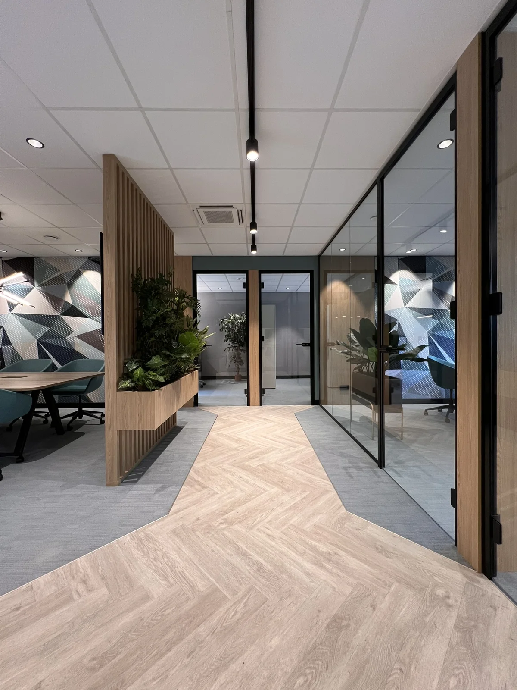
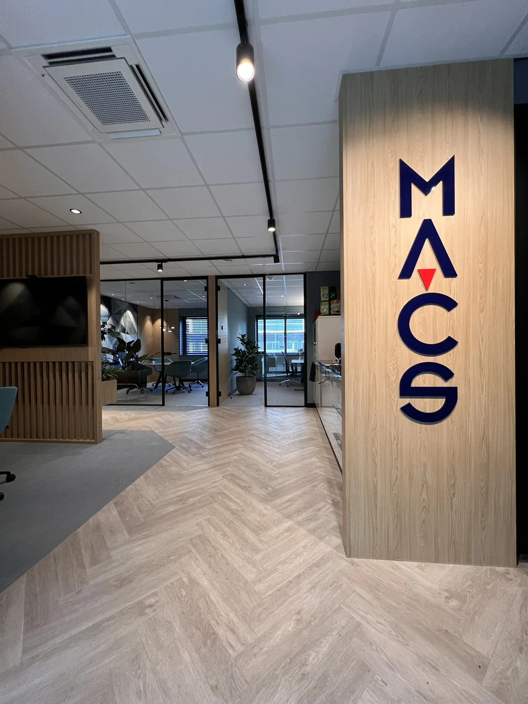
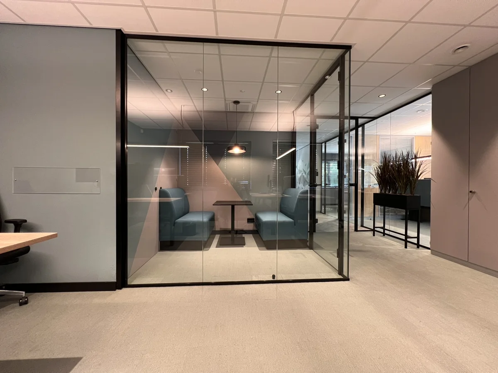
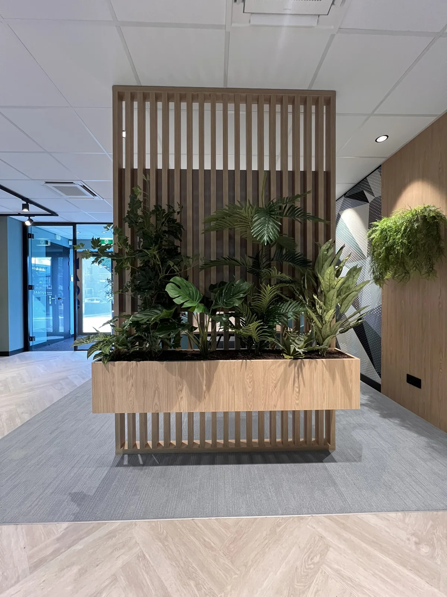
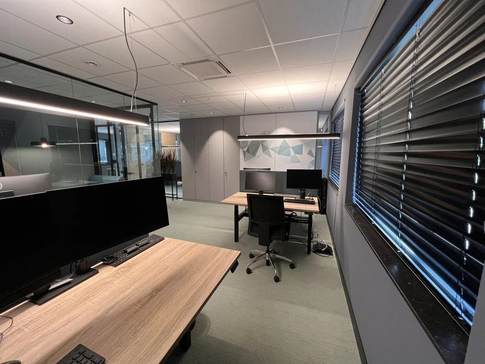
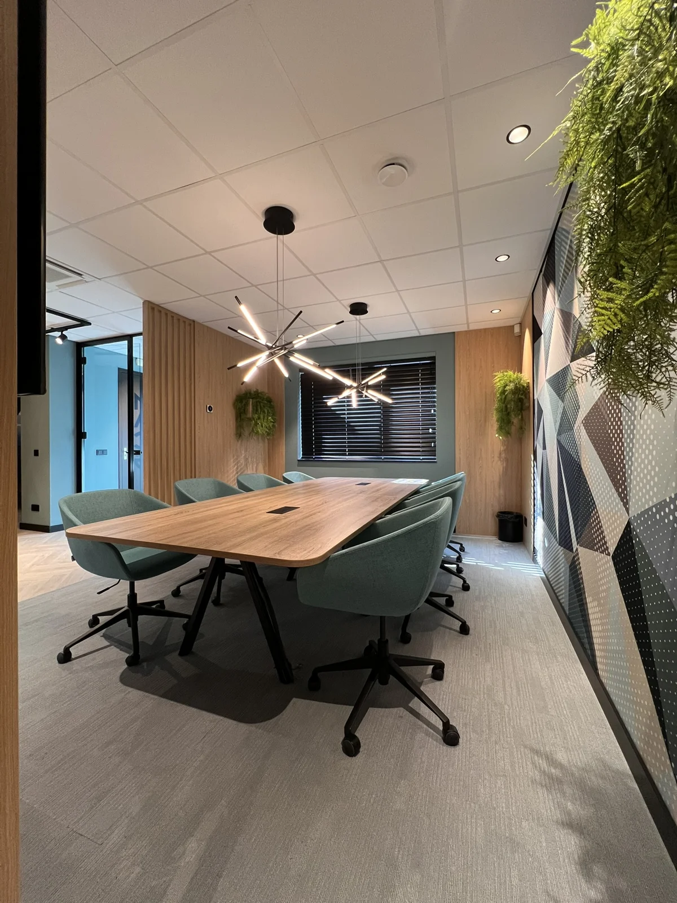
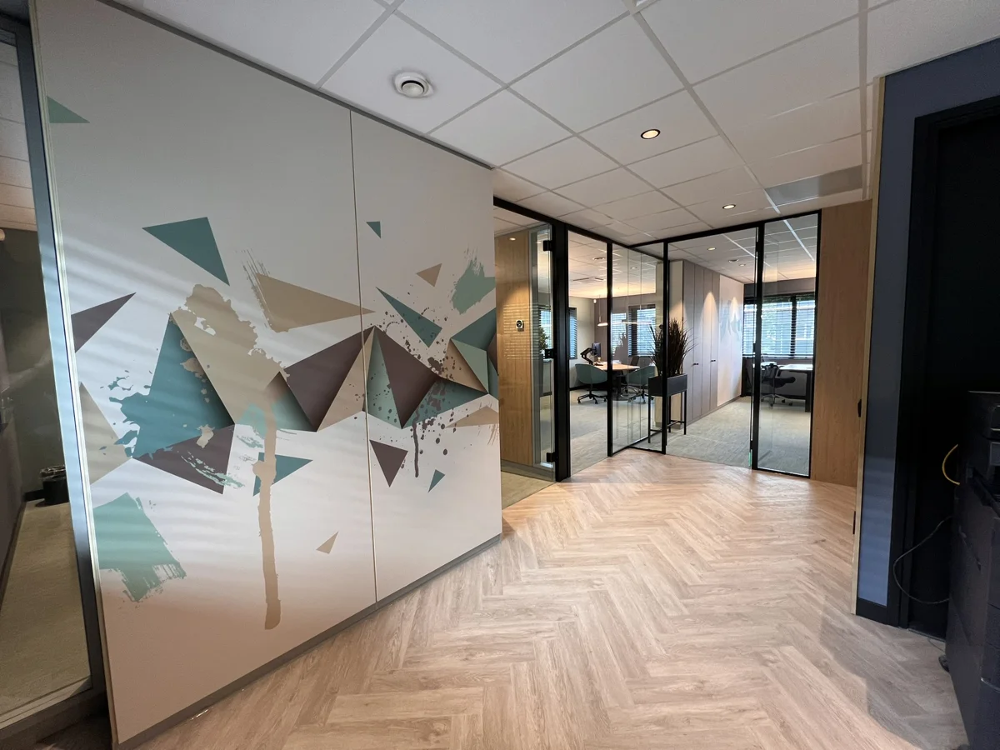
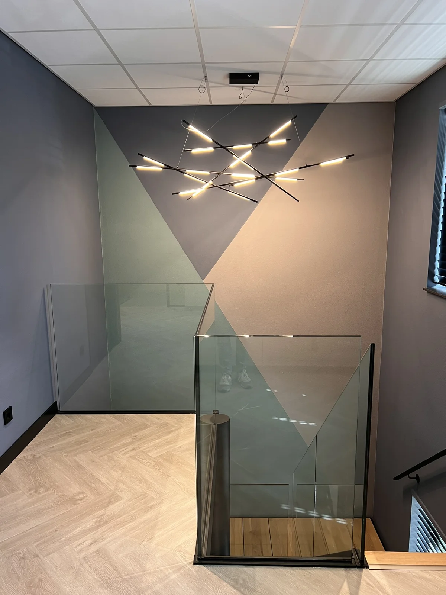
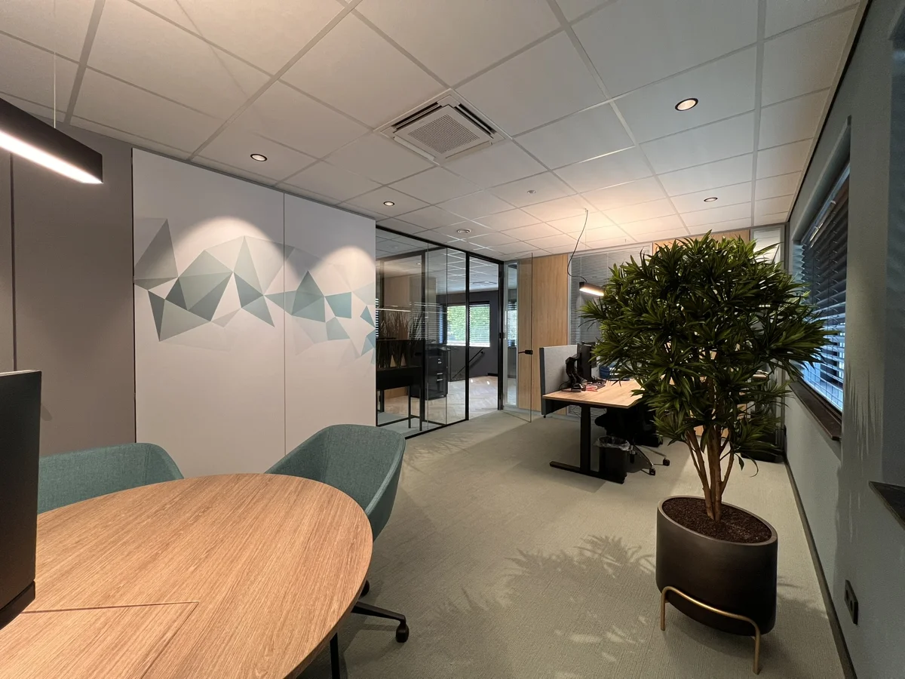

Welkom heten
Jacobs Verzekerd
Ons kantoor past niet meer bij ons merk.
Bekijk project →Concentreren

Klik op een foto om alle 9 beelden te bekijken.
De opgave
Bij MACS gebeurden bellen, overleggen en geconcentreerd werken in dezelfde ruimte. Daardoor werd iedereen voortdurend gestoord, en wie echt wilde doorwerken, bleef thuis. Het kantoor verloor zo zijn functie als plek waar het team samenkomt.
De vraag was een kantoor waar twintig mensen geconcentreerd kunnen werken en kunnen overleggen zonder elkaar in de weg te zitten, met een uitstraling die past bij een IT-dienstverlener.
De aanpak
Het ontwerp begon bij de werkvormen, niet bij het meubilair. Welke activiteiten maken geluid en welke vragen om rust? Op basis daarvan heb ik de ruimtelijke indeling over beide verdiepingen opnieuw opgezet. Bellen en overleggen kregen eigen ruimtes, ruimtelijk en akoestisch gescheiden van de focuszones. Ontvangst en ontmoeting liggen bij de entree, de werkplekken liggen uit de looproute. Zo blijft geluid waar het hoort, en hoeft niemand door een concentratiezone te lopen om bij een spreekkamer te komen.

Ontwerpkeuzes
De vloer als route. Een visgraatvloer in houtlook markeert de looproute, en tapijt ligt waar mensen zitten en werken. De vloer stuurt de beweging zonder bewegwijzering, en het tapijt dempt het geluid in de werkzones.
Glazen spreekkamers. Vier spreekkamers met glazen wanden en zwarte profielen. Gesprekken blijven binnen, terwijl zicht en daglicht door het kantoor blijven lopen. De kleinste ruimte is ingericht met twee banken en een tafel: een vaste plek voor een belafspraak of kort overleg, direct naast de werkplekken.

Zonering
Een lamellenwand met geïntegreerde plantenbak scheidt de overlegtafel van de looproute. De wand is half open: de zones zijn duidelijk gescheiden, maar het kantoor blijft één geheel.

Werkplekken
Zit-sta-bureaus met akoestische schermen ertussen, lijnverlichting boven de werkplekken en een kastenwand langs de gevel. Opbergruimte buiten het werkblad houdt de focuszone overzichtelijk.

Merkbeleving
De driehoek uit het MACS-logo is vertaald naar een terugkerend grafisch motief: in de wandgrafiek van de grote spreekkamer, op de kastfronten en in de beschildering van het trappenhuis. Zo is het merk niet alleen zichtbaar bij de entree, maar verbindt het beide verdiepingen. Blauwgrijs, petrol, mauve en hout vormen het kleurpalet.


Verbinding en licht
Eikenhouten treden, een glazen balustrade en een opvallende hanglamp maken van de trap meer dan een doorgang. Het driehoeksmotief op de wand zorgt dat beide verdiepingen als één kantoor voelen.
Licht dat de functie volgt. Opvallende hanglampen in de grote spreekkamer en het trappenhuis, zwarte railspots langs de route en rustige lijnverlichting boven de bureaus. Elke zone krijgt het licht dat bij het gebruik past.


Het resultaat
Focus en samenwerking hebben nu ieder hun eigen plek binnen hetzelfde kantoor. Overleggen en bellen gebeurt in de spreekkamers, het werk aan het bureau verloopt in rust, en de route verbindt alles zonder te storen. Het driehoeksmotief maakt van twee verdiepingen één herkenbaar geheel. Voor geconcentreerd werk hoef je niet meer thuis te blijven. Het kantoor is weer de plek waar het team samenkomt.
Verdieping
Het antwoord op een rumoerig kantoor is zelden méér dichte kamers. Effectiever is zoneren op geluidsniveau: de levendige functies bij de entree, de stille verder weg. Harde materialen horen op de route, zachte materialen waar mensen werken. Glas scheidt het geluid zonder het zicht te blokkeren, en half open elementen zoals lamellen en beplanting geven structuur zonder het kantoor op te knippen. Over meerdere verdiepingen zorgt een terugkerend merkmotief ervoor dat het kantoor als één geheel blijft voelen. De kern is: scheid het geluid, verbind het zicht.
Andere vragen, andere projecten
Welkom heten
Ons kantoor past niet meer bij ons merk.
Bekijk project →
Samenwerken
Ons team werkt hybride, maar het kantoor ondersteunt dat niet.
Bekijk project →